Obras de Luci Collin
Sobre
Explore as obras de Luci Collin reunidas no catálogo, em ordem de lançamento. Pesquise pelo título ou escolha um período.
25 obras · ordem de lançamento
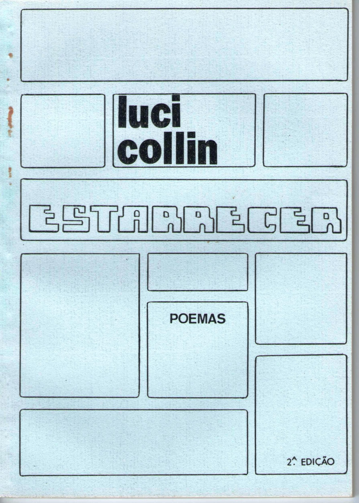
Estarrecer(1984)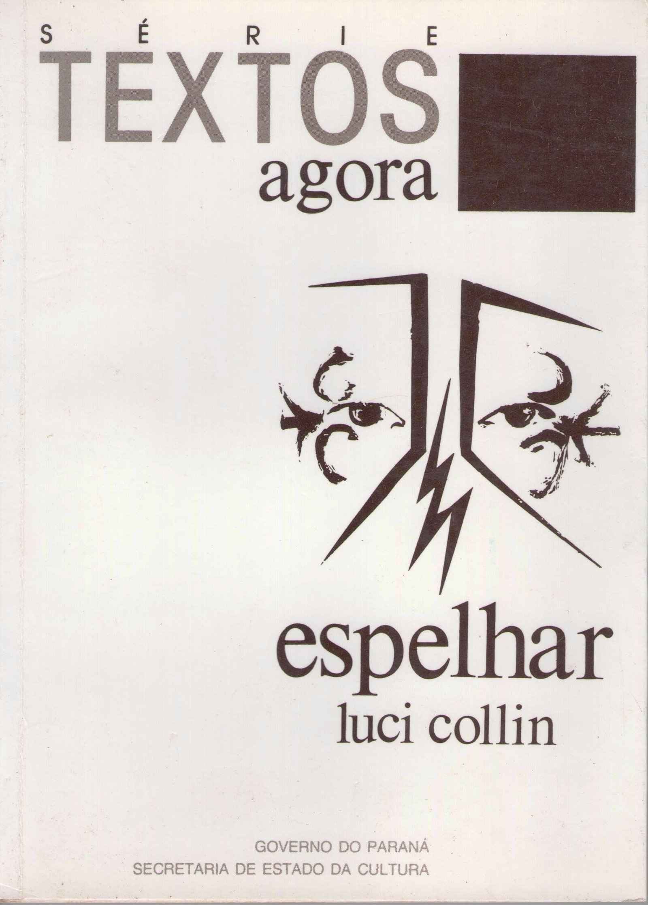
Espelhar(1991)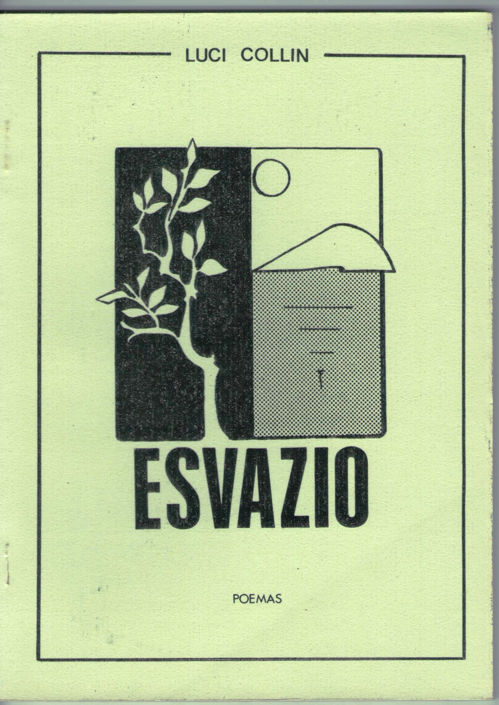
Esvazio(1991)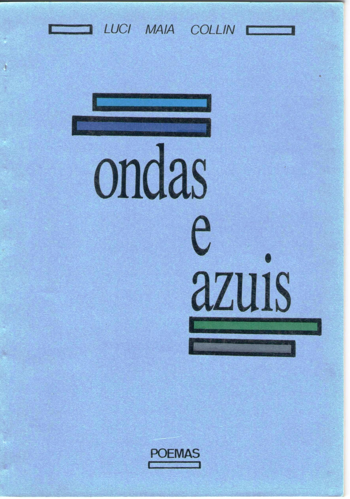
Ondas e Azuis(1992)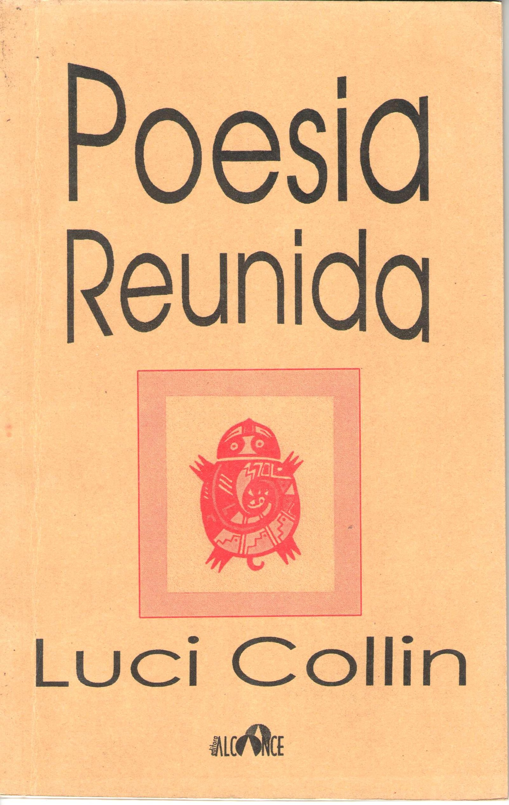
Poesia Reunida(1996)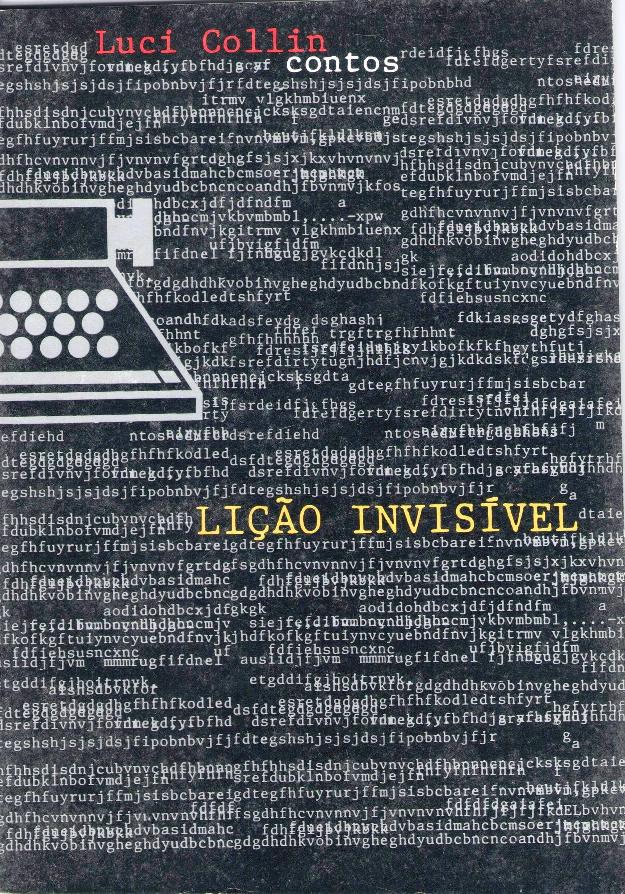
Lição Invisível(1997)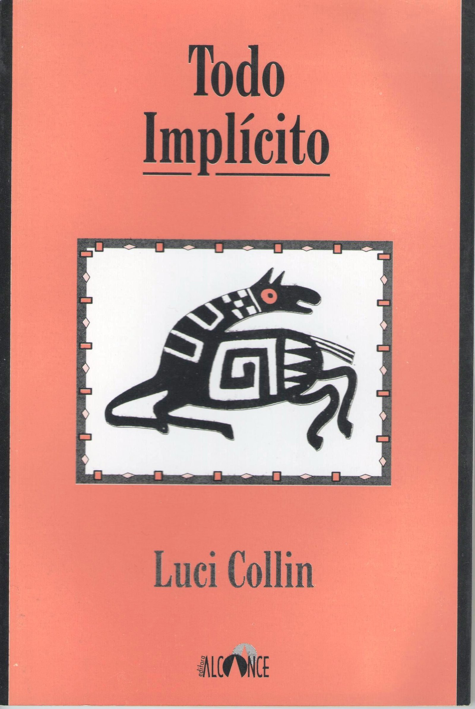
Todo Implícito(1997)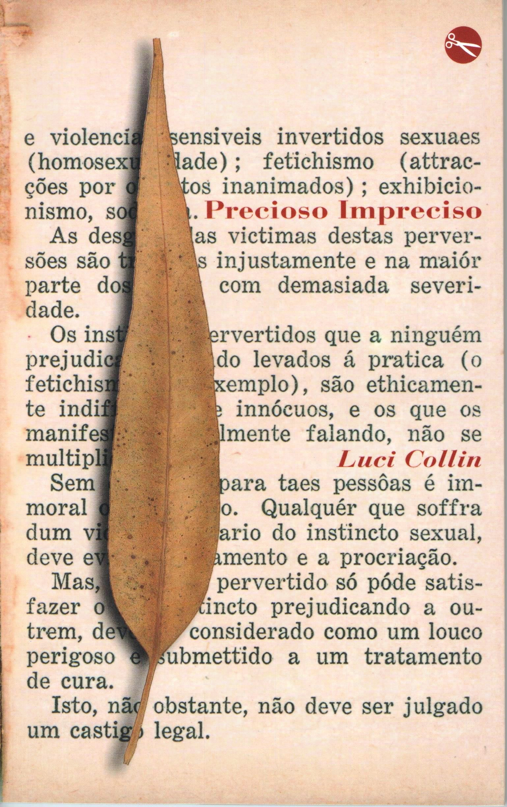
Precioso Impreciso(2001)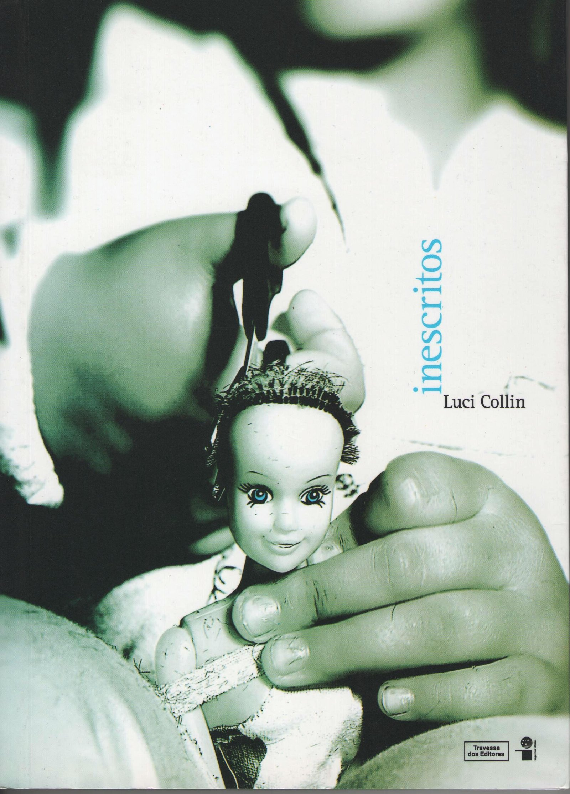
Inescritos(2004)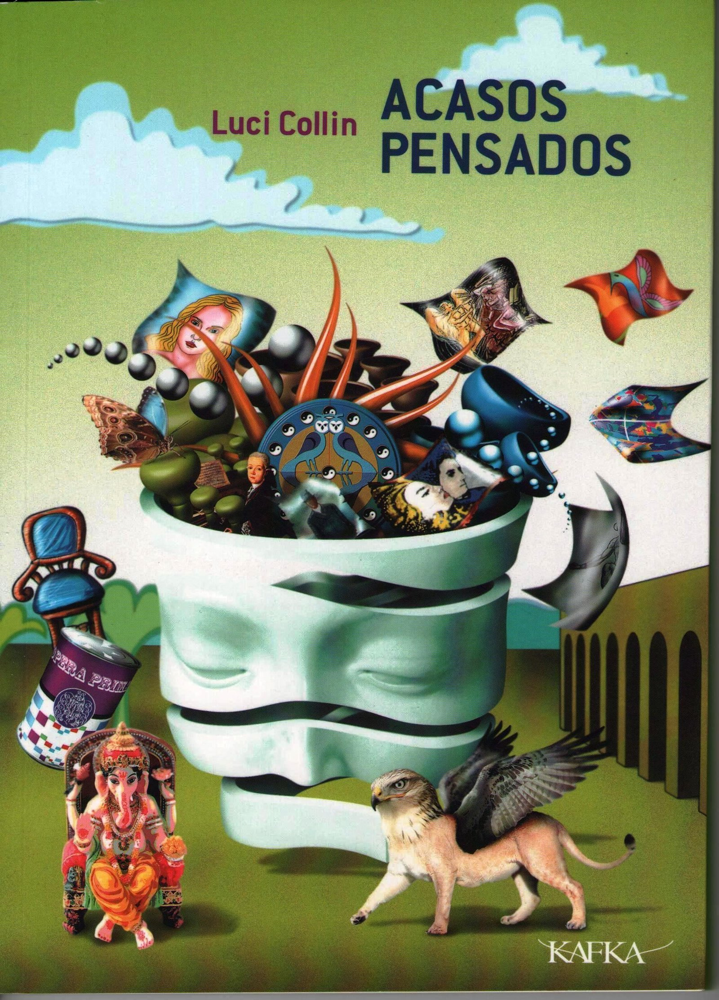
Acasos Pensados(2008)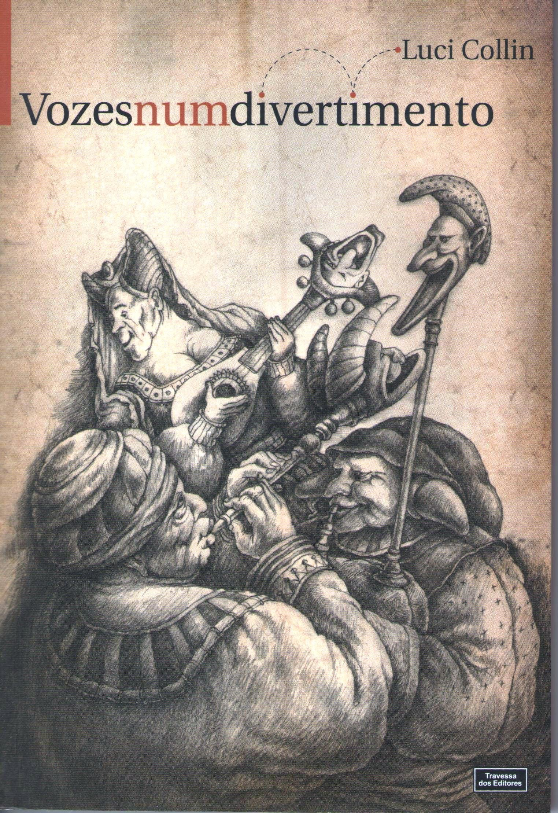
Vozes num Divertimento(2008)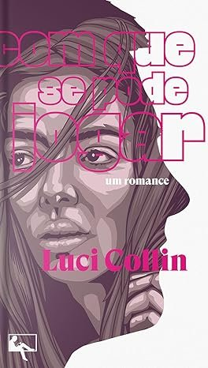
Com Que Se Pode Jogar(2011)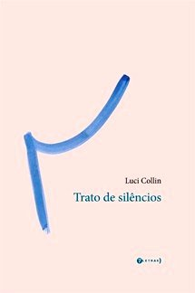
Trato de Silêncios(2012) Querer Falar(2014)
Querer Falar(2014)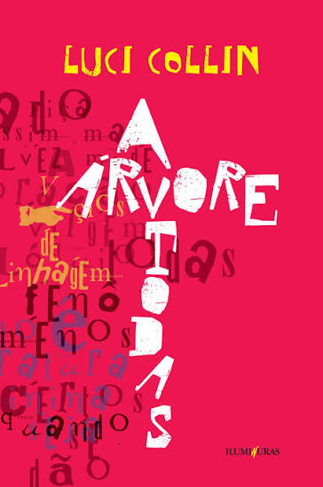
A Árvore Todas(2015)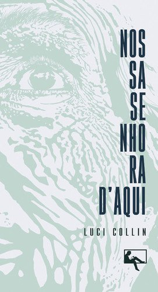
Nossa Senhora D’Aqui(2015) A Palavra Algo(2016)
A Palavra Algo(2016)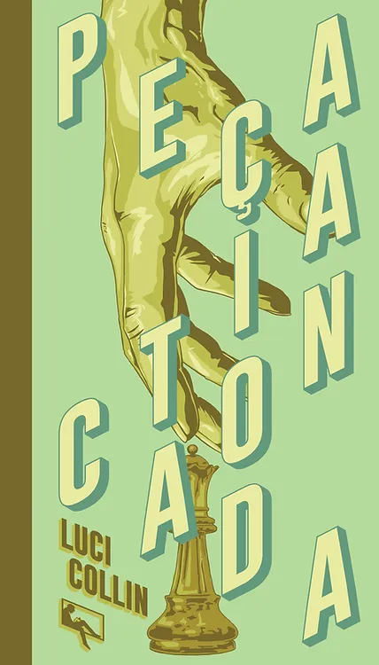
A Peça Intocada(2017)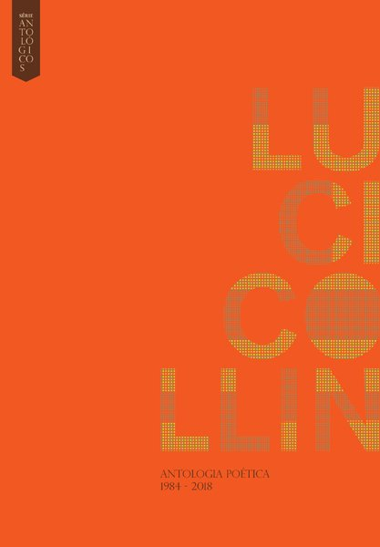
Antologia Poética 1984–2018(2018)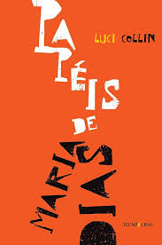
Papéis de Maria Dias(2018)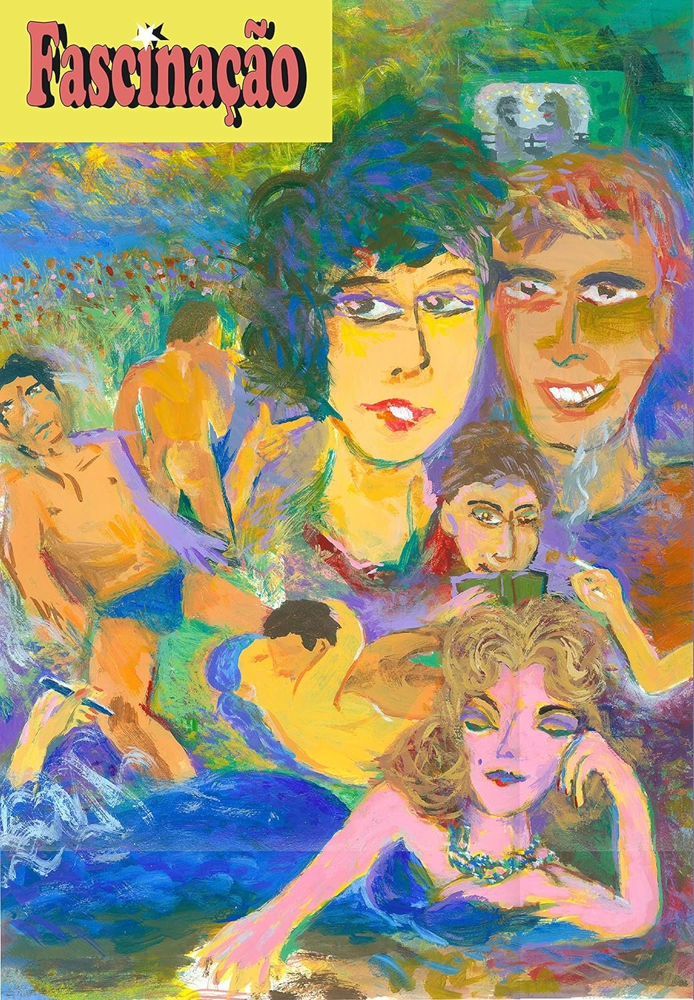
Fascinação(2019)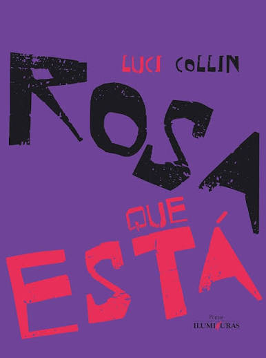
Rosa Que Está(2019) Dedos Impermitidos(2021)
Dedos Impermitidos(2021)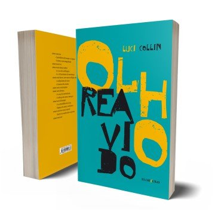
Olho Reavido(2022)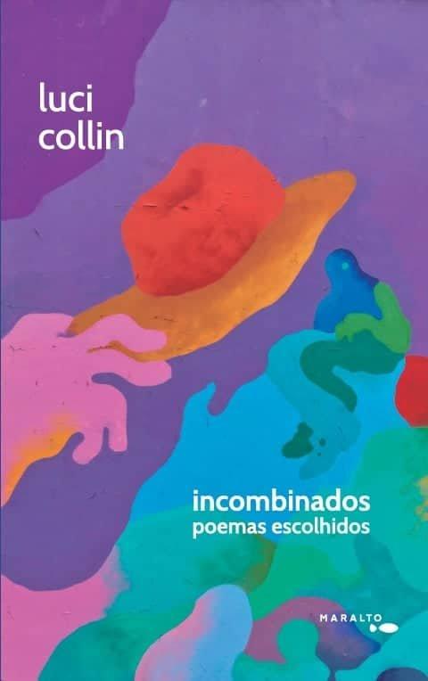
Incombinados — Poemas Escolhidos(2025)
Nenhuma obra encontrada. Tente outro título ou outro período.
Esta página reúne os 25 títulos de Luci Collin selecionados para o CBEP. Os anos indicam a primeira publicação de cada obra; as capas apresentadas podem pertencer a edições posteriores.